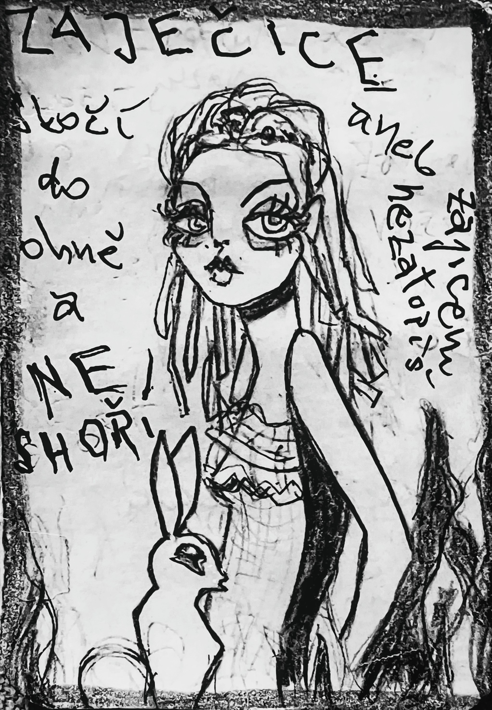

Zapsáno rukou, která nechtěla nic vysvětlit.
O ZAJEČICI
aneb zajícem nezatopíš
—
Bylo jedno pole, takové obyčejné, plné trávy, obilí a prachu. V létě, slunce stálo vysoko, dokázalo se to pole vznítit jedinou jiskrou. A tak se i stalo: zapraskalo suché stéblo, rozfoukal se vítr, a oheň se rozběhl přes lány rychleji než lidský krok. Všechna zvířata, která tam byla, věděla, co mají dělat. Utíkat. Utíkat pryč, co nejdál, co nejrychleji. Utíkal bažant, myši, i celé hejno koroptví. A také zajíci.
—
Jenže jeden zajíc – vlastně zaječice – byla jiná. Nebyla statečnější než ostatní, nebyla chytřejší, dokonce ani nebyla rychlejší. Jen se lekla tak moc, že zapomněla na všechny instinkty. A zatímco ostatní běželi kupředu před ohněm, ona udělala pravý opak: skočila přímo do plamenů.
—
Teď byste čekali, že se promění v popel a zůstane po ní jen smutný pach spálených chlupů. Ale kdepak. Ona dopadla do místa, které už bylo shořelé. Tam, kde oheň už dávno sežral všechen svůj pokrm a nechal jen černou zemi. A tak zaječice prošla plameny, aniž by jí ublížily.
—
A tohle se stalo legendou. Protože všechno, co přežije proti logice, se stane pohádkou.
—
Zajíci si pak začali vyprávět, že ona je ohnivzdorná. Že se jí žádný žár nemůže dotknout, protože oheň si ji spletl s popelem a nechal ji být. Jiní říkali, že to byla náhoda – že jen zakopla a náhodou dopadla do bezpečí. Ale pohádky o náhodě nebývají uvěřitelné, proto si přidávali vlastní verze.
—
Jedni tvrdili, že zaječice byla vyvolená – že měla v srsti zakódované znamení, neviditelné očima, ale čitelné plamenům. Jiní, že ji chránila pradávná smlouva mezi ohněm a zajíci: „Když skočíš do mých úst dobrovolně, já tě nespálím.“ A další vykládali, že to byla zkouška – že kdo se dokáže vzdát vlastního pudu sebezáchovy, ten se stává nesmrtelným.
—
A tak zaječice, která jen zakopla o vlastní strach, byla prohlášena za hrdinku.
—
Ale ona sama se nikdy necítila hrdinkou. Když seděla večer na okraji pole a čistila si spálené vousky, říkala si: „Já jsem se jen lekla. Jen jsem skočila blbě.“ A přitom se kolem ní scházeli ostatní a šeptali: „Podívej, to je ta, co neshoří.“
—
Časem začala chápat, že nezáleží na tom, co se opravdu stalo. Realita byla jen podklad, jako spáleniště pod jejími tlapkami. To, co rostlo nad ní, byla řeč, příběh, legenda. A tak se naučila nosit svůj omyl jako korunu. Když se jí někdo ptal, jak to udělala, neodpovídala. Jen se tajemně usmála a trochu si načechrala srst, aby to vypadalo, že opravdu skrývá nějaké kouzlo.
—
Od té doby se traduje, že zajíce nemůžeš zapálit. Že není palivo, že není dřevo na hranici. Oheň ho možná spálí, ale nikdy nepohltí. Protože kdo jednou skočil do plamenů a vyšel ven živý, toho si už žádný oheň netroufne znovu.
—
A děti v lese se učí od matek tuto pohádku: „Neboj se strachu. Strach tě může hodit tam, kam by tě nikdy nenapadlo jít. A možná právě tam je cesta k přežití.“
—
A tak se stalo, že jedna zaječice, co jen udělala chybu, se zapsala do paměti jako hrdinka.
—
A její příběh? Ten pořád doutná, i když pole dávno vychladlo.